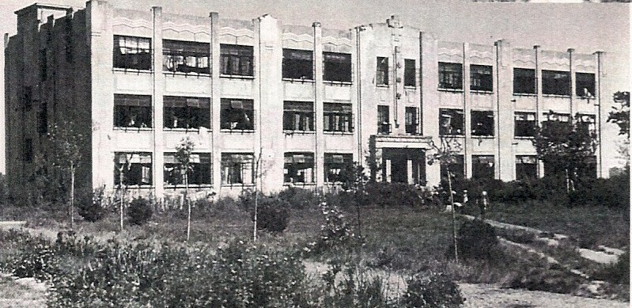
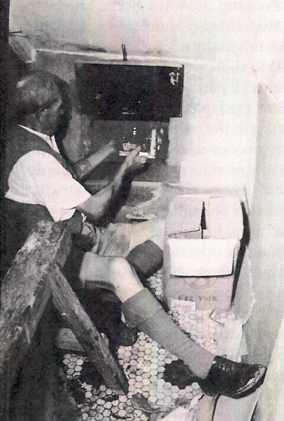

Known as E Block during the Lunghwa period, this building today
contains classrooms and offices of the International Division. It was
under a staircase here in E Block that one internee, George Wells,
assembled and hid a working shortwave radio that supplied the camp with
news of the war and the coming of liberation.

George Wells reveals the location of the secret radio after the War’s end.
